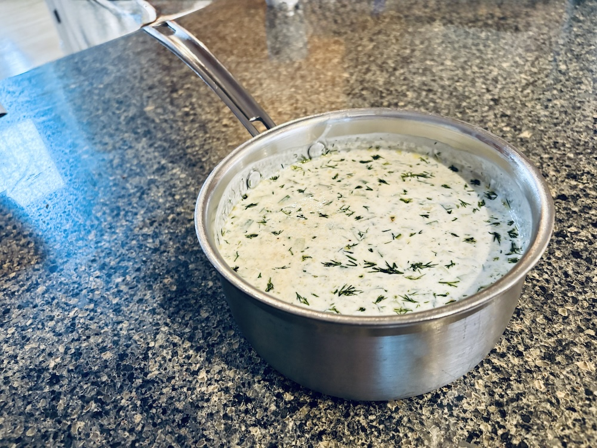

Tarator soup
מרק טרטור של סבא אריה
Ingredients
1 qt buttermilk
3-4 large cucumbers - diced
3-4 pickles in brine - diced
3 cloves of garlic - minced
a lot of dill - chopped
3 tbsp olive oil
Salt and pepper
Instructions
Dice, mince, chop all ingrediants
Mix together with the buttermilk in a small pot
Refrigirate O/N
Enjoy

רכיבים
1 ליטר רוויון
3-4 מלפפונים גדולים חתוכים לקוביות
3-4 מלפפונים חמוצים במלח קצוצים לקוביות
3 שיני שום קצוצות
חופן שמיר קצוץ
3 כפות שמן זית
מלח ופלפל
הוראות
לקצוץ את כל הרכיבים לתוך סיר קטן
להוסיף את הרוויון ולערבב
להעביר למקרר ולתת למרק לשכב לילה לערבוב הטעמים
לאכול בהנאה ביום קיץ חם